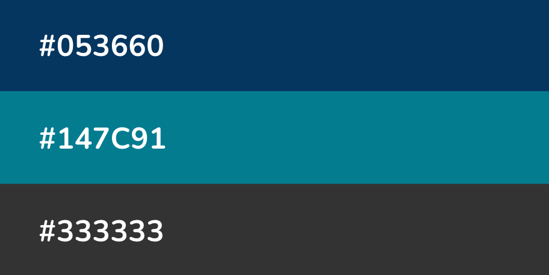
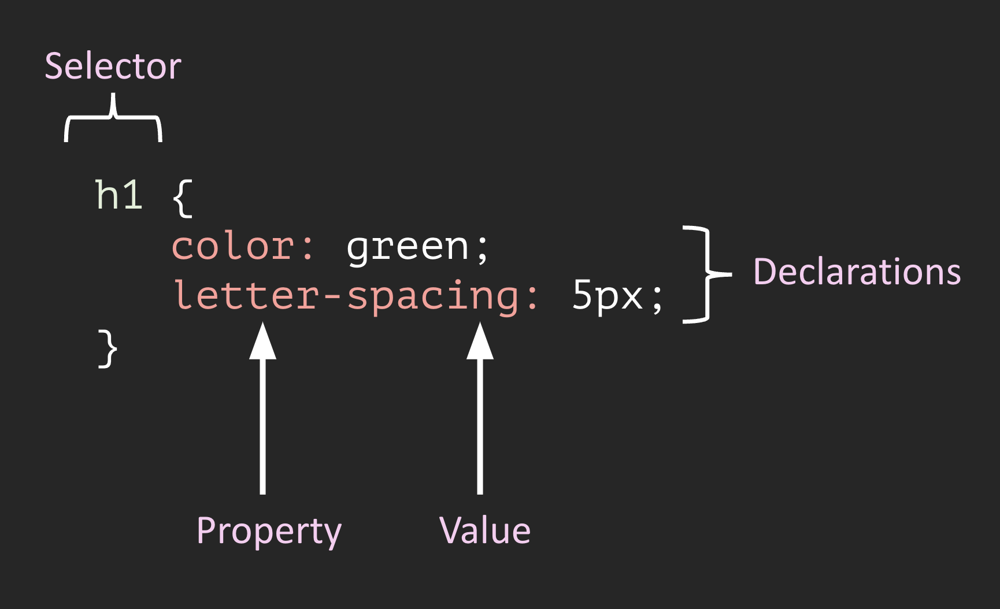
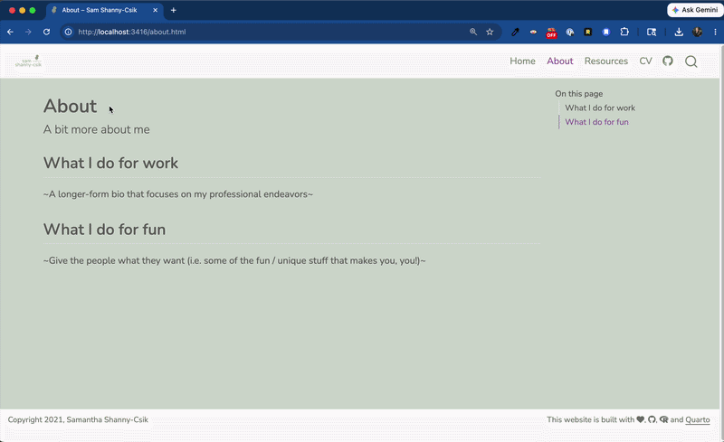

.scss is Sass’s modern file format — a superset of CSS, meaning all valid CSS is also valid SCSS
A CSS preprocessor (converts .scss to CSS — browsers can’t read SCSS directly, but Quarto handles this conversion automatically)
Sass helps to reduce repetition
Sass extends existing CSS features in a number of exciting ways, but importantly reduces repetition. For example, let’s say you’re building a website / web page that uses three colors:

You might imagine how often you’ll need to type those HEX codes out as you developing your stylesheet…it can get annoying rather quickly.
Define Sass variables to reduce repetition
Sass allows us to define variables (in the form $var-name: value;) for our colors, which we can reference instead of writing out their HEX codes each time. This makes your stylesheet more readable and easier to update (e.g. only need to update HEX codes in one spot, not multiple!).
Example stylesheet (.scss)
// define Sass vars $darkblue: #053660;$teal: #147C91;$darkgray: #333333;// use vars in CSS rules (we'll learn more about how to write CSS soon!) h1 {color: $darkblue;}.button-styling {background: $teal;color: $darkblue; border-color: $darkgray;}
Quarto automatically compiles Sass
Web browsers can interpret CSS (.css) but not Sass (.scss or .sass).
Typically, you’d need to compile (i.e. convert) Sass to CSS, then link the resulting .css file in your HTML.
Lucky for us, Quarto compiles the contents of a .scss file into CSS without any extra steps – all we need to do is link to a .scss file directly in our website’s _quarto.yml.
Let’s create our website’s .scss stylesheet.
Create & link your .scss file
1. Create a .scss file in your repo’s root directory:
Terminal
touch styles.scss
2. Add the required region decorator to the top of styles.scss:
styles.scss
/*-- scss:defaults --*/
3. Link styles.scss in _quarto.yml under format > html > theme:
5a. Browse fonts.google.com, choose 1–2 font families, click Get Font for each, then click Get embed code > choose @import > copy the import statement.
5b. Paste it into styles.scss directly beneath /*-- scss:defaults --*/:
styles.scss
/*-- scss:defaults --*/// Import Google fonts@importurl('https://fonts.googleapis.com/css2?family=Nunito:ital,wght@0,200..1000;1,200..1000&family=Sen:wght@400..800&display=swap');// Colors$dark-green: #858E79;// ...
5c. Set your main (default) font in _quarto.yml:
_quarto.yml
format:html:theme:styles.scssmainfont:Nunito# applies to all text elements site-widetoc:truepage-layout:full
Finally, make fine-tuned adjustments by writing CSS rules in styles.scss
HTML & CSS are the building blocks of web pages
HTML is a markup language that structures web content — think of it as the skeleton of a web page (headings, paragraphs, links, images, etc.).
CSS controls how HTML elements look — colors, fonts, layout, spacing. It’s the outfit styling the skeleton.
CSS is rule-based: you select elements and declare how they should look.

Selector — which HTML element(s) to style (e.g. h1)
Property — what to change (e.g. color)
Value — how to change it (e.g. green)
How HTML, CSS, and SCSS fit together
HTML defines your content and structure — elements like <h1>, <p>, <div> tell the browser what is on the page.
CSS targets those HTML elements and controls how they look. A CSS stylesheet is linked to an HTML document so the browser knows which styles to apply.
SCSS is a superset of CSS — all valid CSS is also valid SCSS, but SCSS adds extra features like variables ($color: red;) and nesting. Browsers can’t read .scss directly; it must be compiled to .css first.
Quarto handles all of this for you:
Your .qmd files are converted to HTML
Your styles.scss is compiled to CSS and linked to that HTML
Pseudo-class — a:hover { color: red; } styles <a> tags only when hovered:
<a href="#">Hover over me</a>
default:
Hover over me
on hover:
Hover over me
Add a CSS rules section to styles.scss
Add the /*-- scss:rules --*/ region decorator beneath your Sass variables (required — CSS rules won’t be recognized without it):
styles.scss
/*-- scss:defaults --*/@importurl('https://fonts.googleapis.com/css2?family=Nunito:ital,wght@0,200..1000;1,200..1000&family=Sen:wght@400..800&display=swap');$dark-green: #858E79;// ... additional Sass variables ...$link-color: $purple;/*-- scss:rules --*//* Write your CSS rules below here */
Use Inspect to figure out what to target

In your website preview, right click on an element of interest (in this case, let’s start with the page title, “About”) and choose Inspect to pull up the underlying HTML & CSS files. You can continue to right click / inspect additional elements (e.g. the section header, “What I do for work”).
Hovering your mouse over different lines of HTML highlights the corresponding element on your webpage.
Write CSS rules in your styles.scss
Example: style all <h1> and <h2> elements site-wide